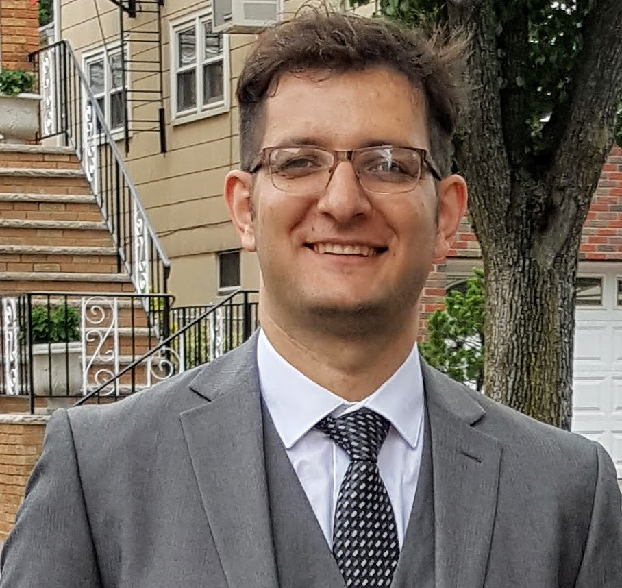

 I, Pejman Sanaei (my CV), will be an Assistant
Professor in the Department of Mathematics at New York
Institute of Technology, starting from September 2019. I am currently a Courant instructor at
the Courant Institute of Mathematical Sciences (CIMS),
New York University (NYU) and working on mathematical modeling and simulation
in the Applied Math Lab (AML) and
Research and Training Group in Mathematical Modeling and Simulation at CIMS. I finished my Ph.D
(August 2017), in applied mathematics from the Department of Mathematical
Sciences (DMS) at New Jersey Institute of Technology (NJIT) at
Complex Flows and Soft Matter Group under the supervision of my PhD
academic advisor Professor Linda Cummings. I have an
undergraduate degree in mechanical engineering (fluid mechanics) and a masters degree in pure mathematics, both
completed before I began my Ph.D. studies at NJIT. During my Ph.D. studies I also completed a masters degree in
applied statistics, awarded in December 2016. I have expertise in fluid mechanics, deterministic and stochastic
approaches to mathematical modeling, tissue engineering, applications of mathematics to industry and in particular
my dissertation topic is mathematical modeling of membrane filtration.


 2
2 4
4